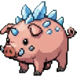

Tap a stage to read its story.
Pigmite is a round-bodied pink piglet with a fine spray of pale blue crystal shards erupting from its back like a sparkling crown. Its face is dusted with stone-flecks and a flat snout, and it trots briskly through the lower passes of Granite Heights, sniffing at rocks to read the words Axon once scratched there. It is entirely unbothered by cold and sleeps nose-down against a granite slab, absorbing the stone's memory through the night.
Field note: Pigmite sneezes crystal shards when startled - Granite Heights miners keep a respectful distance and collect the shards afterward for good luck.
Granite Heights. Pigmite and its family are found in the Granite Heights. See everyone who lives there.
Share a Bond Food that matches its types to become friends. Pigmite loves:
A Bond Food is not a trick. It joins your spirit with the Kimuro's spirit, and only when it chooses you.
Print the Kimuro adventure packs: mazes, cards, a board game and Bond Mark medals.
See the printable packs